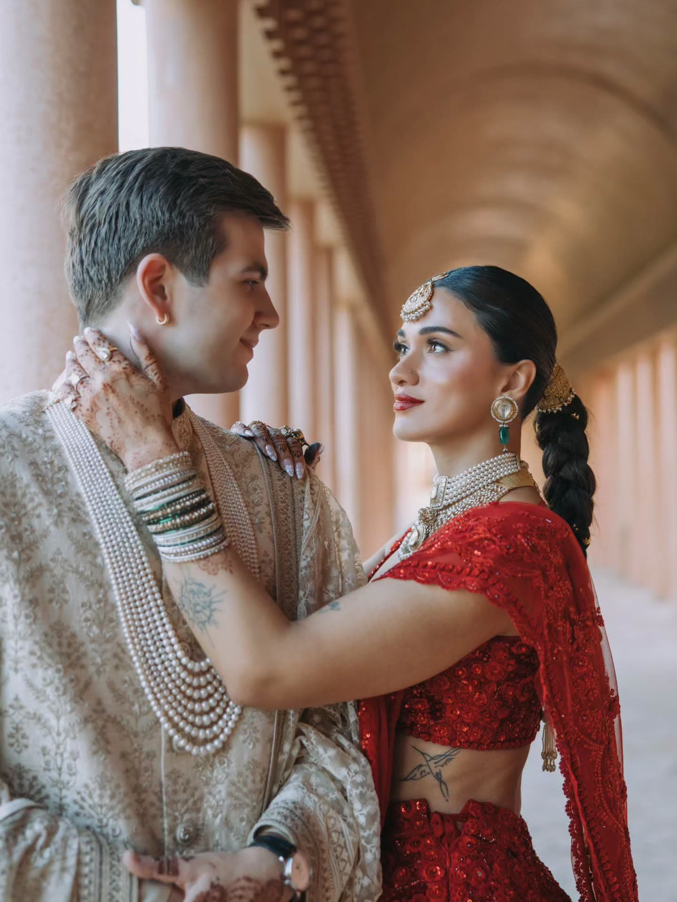
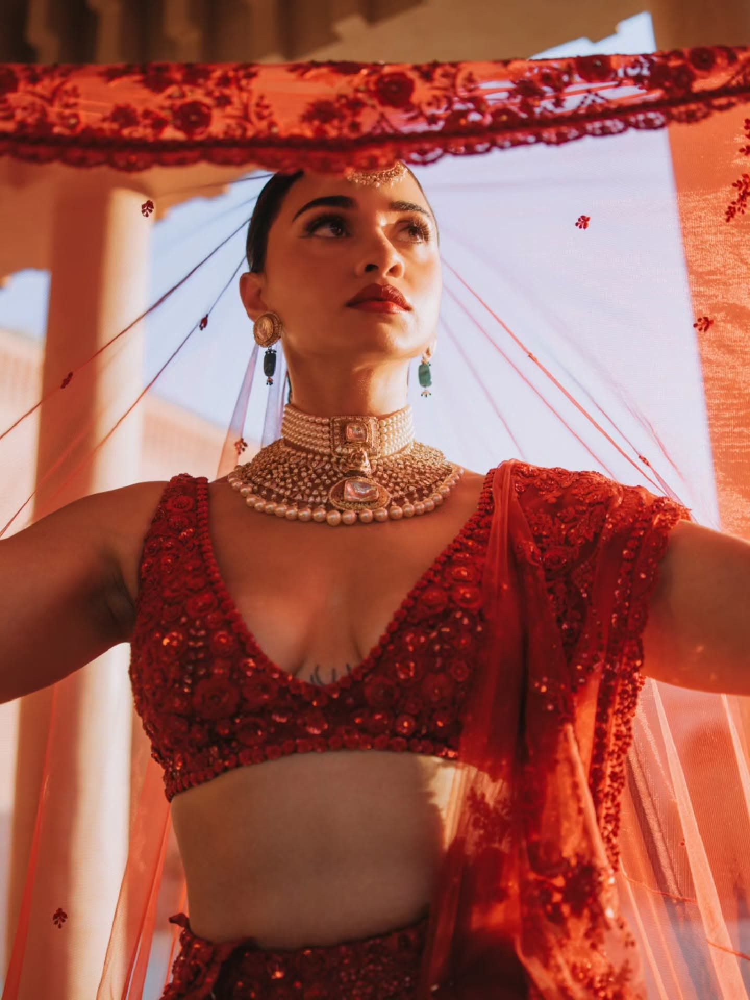
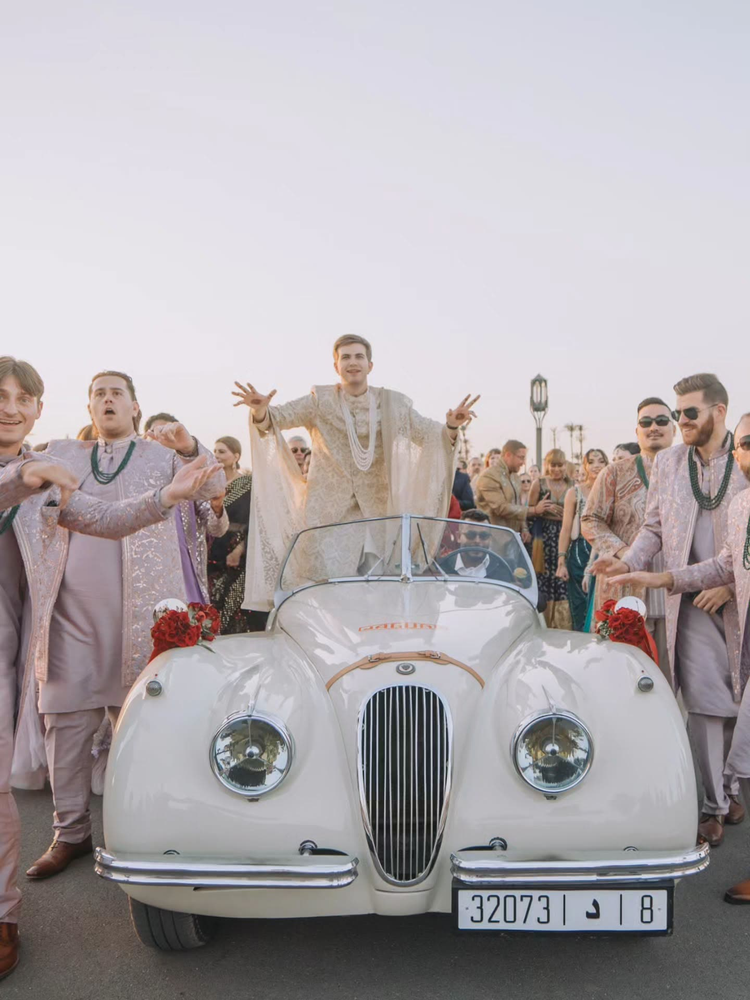
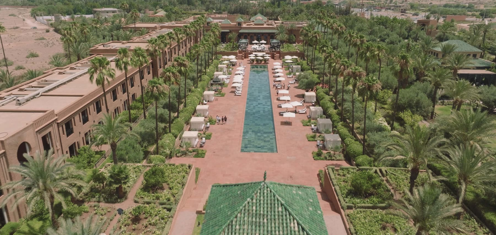
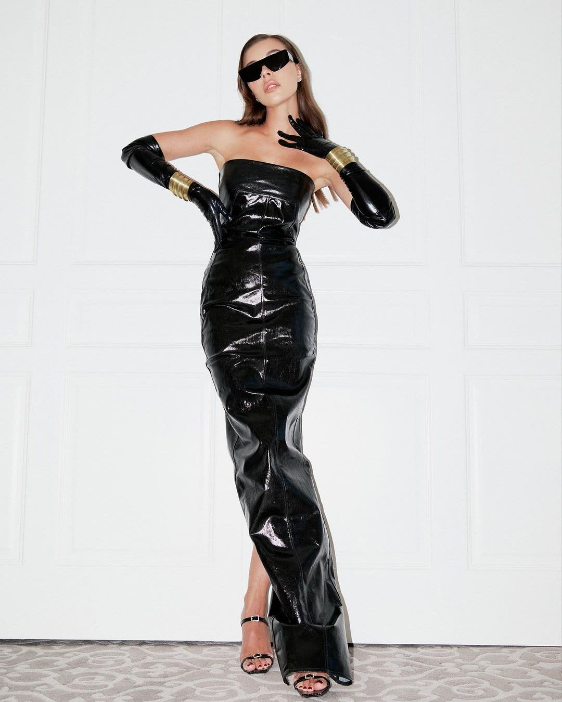
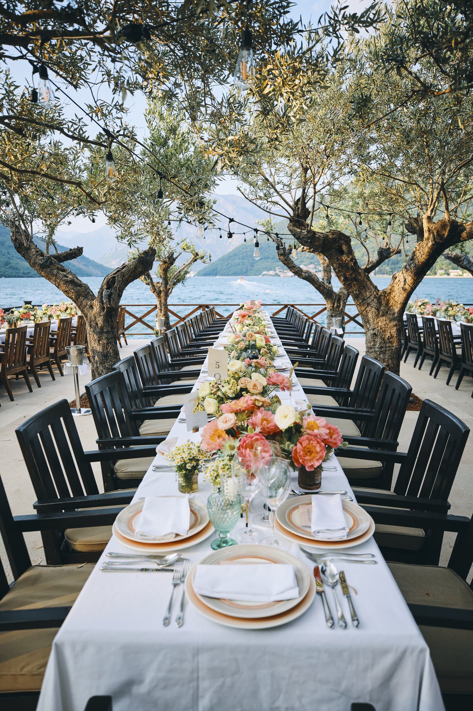

Marrakech & Morocco
Wedding Videographer in Marrakech
A Marrakech destination wedding is unlike anything in Europe. The palaces are older, the gardens are larger, the desert is twenty minutes away, and the light turns everything gold for an hour longer than you expect. It is also a city where a three-day celebration for guests flying in from every continent can be staged with a scale and a hospitality that few places can match.
As a Marrakech wedding videographer, we have filmed for couples from all over the world, from a Jewish wedding between the desert and the Selman hotel to Henna and Ben's three-day Indian celebration at Amanjena and The Oberoi. Our base on the French Riviera is a short flight away, and we work with the planners who know the city best.
Henna & Ben: three days, two palaces and a desert
Henna and Ben's guests travelled from all over the world to Marrakech, and the couple gave them three days they will be telling stories about for years. Cocoon Events planned the whole weekend, with Roni Floral Design dressing every space in flowers, and every day had a completely different character.
It began in the desert outside the city, where a platform was built from nothing for the first night's celebration. Under an open sky, fire dancers lit up the dark while guests who had landed only hours earlier found themselves in a scene from another century. The second day belonged to tradition: a Sangeet full of choreographed family performances, and a Baraat that brought the groom in on a wave of drums, dancing and a vintage roadster, through the gardens of Amanjena.
The final day was the Western ceremony at The Oberoi, Marrakech. A platform was constructed over the central fountains and pools of the palace garden, so the couple exchanged vows standing above the water, framed by the long reflecting pools and the arcades behind them. It was the calmest moment of the weekend, and one of the most beautiful things we have ever filmed.
The great wedding venues of Marrakech
Amanjena, in the Palmeraie, is built around a vast reflecting basin and pink-walled pavilions, with an intimacy that makes even a large wedding feel private. The Oberoi, Marrakech, set against the Atlas Mountains, has some of the most spectacular water gardens in the city, perfect for a ceremony that needs a sense of grandeur.
La Mamounia is the most famous address in Marrakech and a legendary wedding venue in its own right, with its century-old gardens and Art Deco interiors. It does not appear in Henna and Ben's film ... they chose Amanjena and The Oberoi ... but for many couples it is the first name on the list. Beyond the palaces, the desert camps of Agafay and the private riads of the Medina give a Marrakech wedding film a range of settings that no single venue in Europe can offer.
Indian weddings in Morocco
Marrakech has become one of the great destinations for Indian weddings outside India, and for good reason: the palaces can host hundreds of guests, the climate is reliable, and Moroccan hospitality is built for multi-day celebrations. A Morocco wedding videographer filming an Indian wedding needs to know the running order of every ritual, from the Haldi and Mehndi to the Sangeet, the Baraat and the pheras, because none of them repeat for a camera.
We have filmed Indian celebrations at Lake Como and in Marrakech, and we build the crew around the schedule: enough cameras to be with the bride, the groom and the guests at the same time, and a director who knows where the next moment will happen before it does.
A Marrakech wedding film, and the photographer beside it
Many couples start by searching for a Marrakech wedding photographer and only later realise how much of the weekend a film can hold: the music of the Sangeet, the noise of the Baraat, the sound of the vows over the fountains. We are filmmakers first. We work alongside your photographer rather than around them, sharing light and timings so both of you end up with the frames you want, and we are happy to recommend photographers we have worked with in Morocco.
— A Closer Look
Henna & Ben ... Three Days in Marrakech
A Sangeet, a Baraat, a night of fire in the desert and a Western ceremony over the fountains of The Oberoi. Henna and Ben's Marrakech wedding brought guests from all over the world together for three days of celebration, planned by Cocoon Events with flowers by Roni Floral Design.


— Selected Work




— Also Filming In
— Questions
Frequently asked
Who is the best wedding videographer in Marrakech?
Look for a studio that has filmed full multi-day weddings in Marrakech, not just a styled shoot, and ask to see the whole film. Chromata Films has filmed Henna and Ben's three-day Indian wedding at Amanjena and The Oberoi, and Alexandra and Raphael's wedding between the Agafay desert and the Selman hotel, both planned by Cocoon Events.
How much does a Marrakech wedding film cost?
Collections start at 15,000 USD, with travel and accommodation included. Most Marrakech weddings run across two or three days and several venues, so the majority of quotes sit above the entry point.
Have you filmed at La Mamounia?
La Mamounia is the most famous wedding venue in Marrakech, but it does not appear in the films on this page: Henna and Ben chose Amanjena and The Oberoi. We would love to film there, and the way we work in any Marrakech palace is the same ... scouting the gardens and the light in advance, and planning around the heat of the day.
Do you film Indian weddings in Morocco?
Yes. Henna and Ben's wedding included a Sangeet, a Baraat and a Western ceremony across three days, and we have filmed multi-day Indian celebrations at Lake Como as well. We plan the crew around the order of the rituals so nothing is missed.
Are you also a Marrakech wedding photographer?
We specialise in wedding films. We work closely with your photographer on the day, and we are happy to recommend photographers we have worked with in Morocco.
Can you film a celebration in the desert?
Yes. Henna and Ben's first night took place on a platform built in the desert, with fire dancers after dark. Desert events need planning for dust, wind, power and very low light, and we bring the equipment for all of it.
How long until we receive our film?
Films typically arrive four to eight weeks after the wedding, depending on the season's workload. Where a collection includes an Instagram reel cut, that usually comes together within a few days. It is always an estimate rather than a fixed date ... every wedding's schedule and workload are different, so we would rather be honest about the range than promise something we can't guarantee.
— Begin
Tell us about your day
Collections start at 15,000 USD. Send us the date, the place and a sentence about the celebration ... we will come back to you personally.
Check your date →